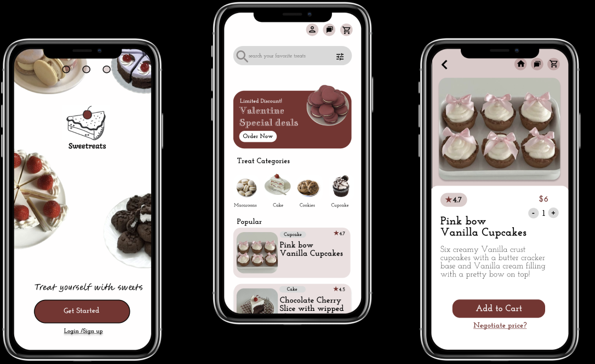
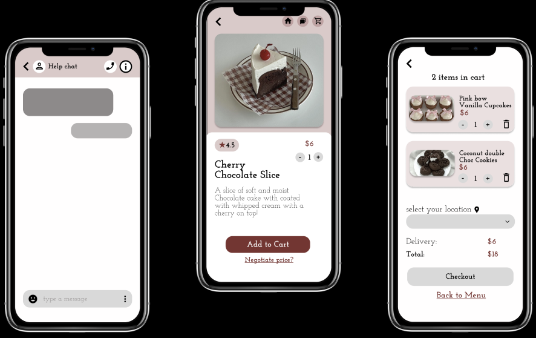

Sweetreats
OVERVIEW: Project Name: SweetTreats Mobile AppClient: Personal Project
Date: April 2024
Role: Lead UI/UX Designer SweetTreats is a fictional online restaurant specializing in delicious desserts and treats. My goal for this project was to create a mobile app that provides a seamless and enjoyable user experience for browsing, ordering, and receiving updates on their favorite sweets.  PROCESS:
User Research: I conducted surveys and interviews with potential users to understand their preferences and pain points when ordering food online.
Market Analysis: I analyzed competitors and identified key features that would make SweetTreats stand out.
Brainstorming Sessions: I generated ideas and prioritized features based on user feedback and research findings.  Design: High-Fidelity Mockups: I developed high-fidelity mockups using Figma, focusing on an attractive, user-friendly interface with a playful yet sophisticated aesthetic. Design Iterations: I conducted usability tests and gathered feedback to refine the design, ensuring it met user needs and expectations. Development:Prototyping: I created interactive prototypes to demonstrate the app’s functionality and gather additional user feedback. Implementation: I ensured that the design was feasible and efficient, focusing on usability and user satisfaction. Final Product: The SweetTreats app features an intuitive navigation system and an easy-to-use ordering process.